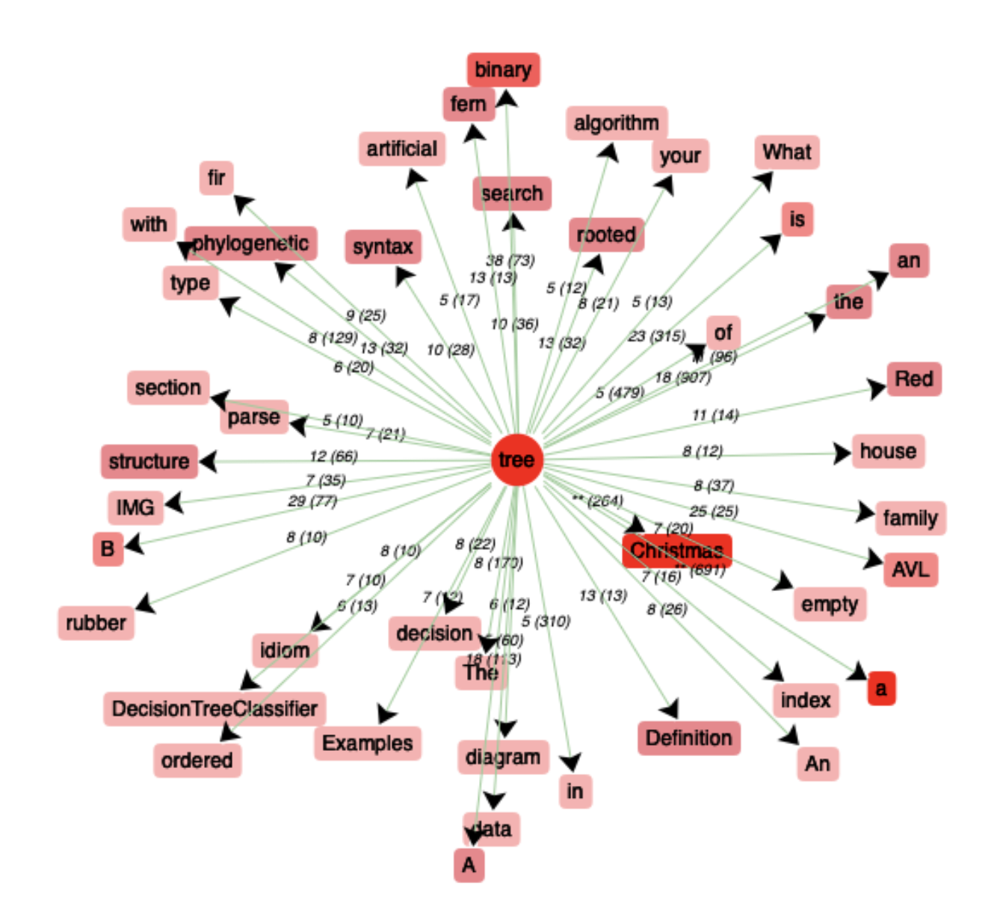
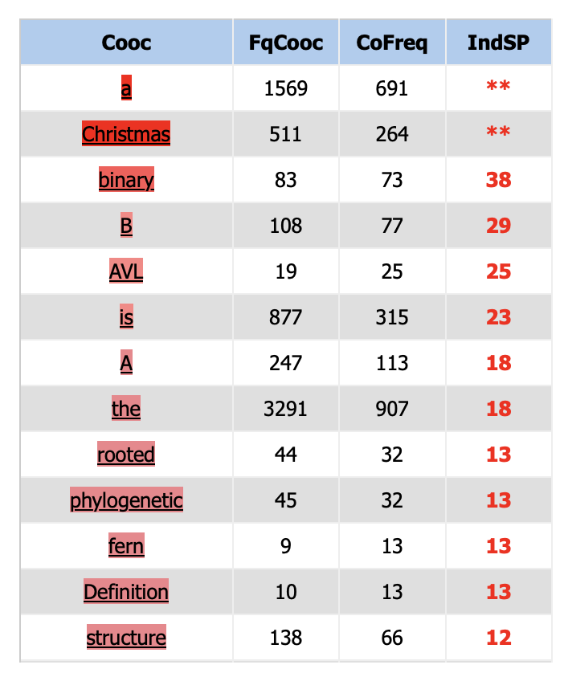
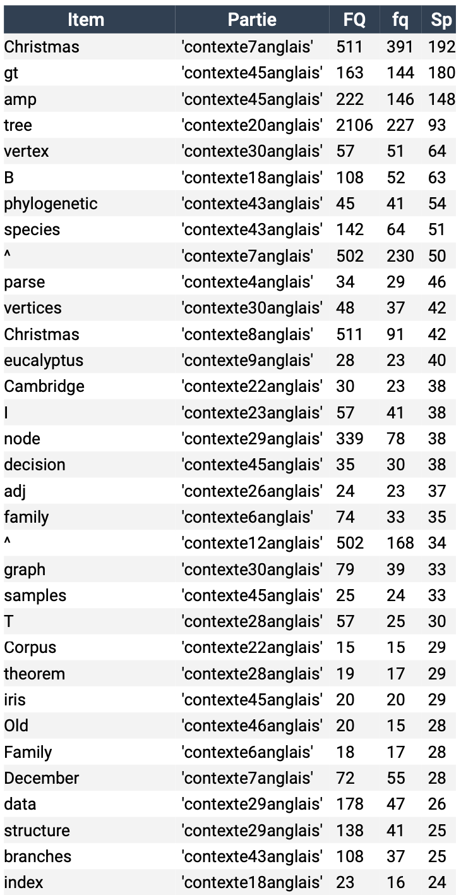

Par soucis de lisibilité, nous avons gardé les cooccurrents avec une co-fréquence de 10 minimum.

Graphe des coocurences du mot "tree" dans le corpus

Tableau des coocurences du mot "tree" dans le corpus
En ignorant les stop-words, le cooccurrent le plus fréquent du mot "tree" est le mot "christmas", formant le groupe nominal complexe "christmas tree".
Nous ne nous y attendions pas, mais cela est sûrement dû au fait que la majorité des liens aient été sélectionnés au début du mois de janvier, et que
beaucoup de ces liens sont des articles de journal; les journaux parlent sûrement davantage des arbres de Noël quelques semaines après Noël qu'en juillet.
Mis à part cette occurence due au contexte, on trouve peu de termes botaniques dans les principales coocurences. En revanche, on trouve beaucoup d'occurrences
relative aux structures de données : binary tree, syntax tree, search tree, AVL tree...
Spécificité

Tableaux des mots les plus spécifiques du corpus
L'analyse de spécificité valide notre intuition sur "chirsmas tree" : le terme "christmas" est très spécifique à deux articles de journal parus en
janvier. Les deux et troisième tokens les plus spécifiques ("gt" et "amp") viennent du même texte et sont dus à la mise en page du site. On trouve
certains termes botaniques que l'on ne trouvait pas dans le calcul des cooccurrents, ce qui montre que la surabondance d'occurence mathématiques et syntaxiques est
probablement l'effet d'un biais introduit dans la sélection des urls.
Conclusion générale
Ces données nous permettent de valider notre hypothèse sur la polysémie du mot "arbre" puisque ce dernier apparaît dans des textes au thèmes variés comme la botanique, les mathématiques ou la syntaxe, ainsi que dans des expressions comme arbre de Noël ou arbre syntaxique.
Si nous souhaitions améliorer nos résultats, il serait intéressant d'inclure une liste des stopwords afin d'éliminer de notre analyse les items peu pertinents.
De plus, il serait intéressant de faire des requêtes par lemme afin d'inclure dans notre analyse toutes les flexions du mot recherché. Cela reste négligeable dans le cas de l'anglais puisque notre mot n'a ici que 2 formes (singulier et pluriel), mais peut être plus problématique dans des langues flexionelles ou agglutinantes.